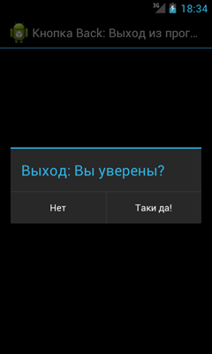

/* Моя кошка замечательно разбирается в программировании. Стоит мне объяснить проблему ей - и все становится ясно. */
John Robbins, Debugging Applications, Microsoft Press, 2000

/* Моя кошка замечательно разбирается в программировании. Стоит мне объяснить проблему ей - и все становится ясно. */
John Robbins, Debugging Applications, Microsoft Press, 2000
Аппаратные и клавиатурные клавиши
Кнопка Back: Вы уверены, что хотите выйти из программы?
Двойное нажатие на кнопку Back
Обработка кнопки Menu
Прячем клавиатуру
Изменить вид клавиатуры для данного EditText
Переопределяем кнопку Enter
Сдвигаем активность
Обработка аппаратных клавиш и клавиатуры имеет следующие методы
Кроме клавиш, есть еще другие методы обработки пользовательского ввода (здесь не рассматриваются):
Чтобы ваши представления и активности реагировали на нажатия клавиш, переопределите обработчики событий onKeyUp и onKeyDown:
@Override
public boolean onKeyDown(int keyCode, KeyEvent event) {
// Обработайте нажатие, верните true, если обработка выполнена
return false;
}
@Override
public boolean onKeyUp(int keyCode, KeyEvent event) {
// Обработайте отпускание клавиши, верните true, если обработка выполнена
return false;
}
Параметр keyCode содержит код клавиши, которая была нажата; сравнивайте его со статическими кодами клавиш, хранящимися в классе KeyEvent, чтобы выполнять соответствующую обработку.
Параметр KeyEvent также включает в себя несколько методов: isAltPressed(), isShiftPressed() и isSymPressed(), определяющих, были ли нажаты функциональные клавиши, такие как Alt, Shift или Sym. Статический метод isModifierKey() принимает keyCode и определяет, является ли нажатая клавиша модификатором.
Кнопка Back закрывает приложение, точнее текущую активность, но если приложение состоит из одной активности, то это равносильно закрытию всего приложения. В большинстве случаев вам нет никакого дела до неуклюжего пользователя, который по ошибке нажал на кнопку Back вместо кнопки Подарить разработчику миллион. Но, если ваша программа, будучи запущенной на телефоне пользователя, потихоньку списывает деньги клиента в счет Фонда голодных котов, то нужно дать ему шанс задуматься и вывести диалоговое окно с вопросом: А действительно ли вы хотите выйти из программы?
Чтобы реализовать такую задачу, нужно переопределить поведение кнопки Back через метод onBackPressed() следующим образом:
@Override
public void onBackPressed() {
// TODO Auto-generated method stub
// super.onBackPressed();
openQuitDialog();
}
private void openQuitDialog() {
AlertDialog.Builder quitDialog = new AlertDialog.Builder(
CustomViewDemoActivity.this);
quitDialog.setTitle("Выход: Вы уверены?");
quitDialog.setPositiveButton("Таки да!", new OnClickListener() {
@Override
public void onClick(DialogInterface dialog, int which) {
// TODO Auto-generated method stub
finish();
}
});
quitDialog.setNegativeButton("Нет", new OnClickListener() {
@Override
public void onClick(DialogInterface dialog, int which) {
// TODO Auto-generated method stub
}
});
quitDialog.show();
}

Данный метод появился в Android 2.0. Для более ранних версий использовался стандартный код обработки onKeyDown:
@Override
public boolean onKeyDown(int keyCode, KeyEvent event)
{
//replaces the default 'Back' button action
if(keyCode == KeyEvent.KEYCODE_BACK)
{
// ваш код
}
return true;
}
Другой вариант - выход из приложения при двойном нажатии на кнопку Back. Это можно применить в тех случаях, когда считаете, что пользователь может случайно нажать на кнопку, например, во время активной игры. Приложение закроется, если пользователь дважды нажмёт на кнопку в течение двух секунд.
private static long back_pressed;
@Override
public void onBackPressed() {
if (back_pressed + 2000 > System.currentTimeMillis())
super.onBackPressed();
else
Toast.makeText(getBaseContext(), "Press once again to exit!",
Toast.LENGTH_SHORT).show();
back_pressed = System.currentTimeMillis();
}
У телефона, кроме кнопки Back, есть еще кнопка Menu для вызова команд меню. Если необходимо обрабатывать нажатия этой кнопки (например, управление в игре), то используйте следующий код (обычное и долгое нажатие):
@Override
public boolean onKeyDown(int keyCode, KeyEvent event) {
if (keyCode == KeyEvent.KEYCODE_MENU) {
event.startTracking();
etext.setText("Key Down"); //вывожу текст в текстовом поле
return true;
}
return super.onKeyDown(keyCode, event);
}
@Override
public boolean onKeyLongPress(int keyCode, KeyEvent event) {
if (keyCode == KeyEvent.KEYCODE_MENU) {
etext.setText("Long Press"); //вывожу текст в текстовом поле
return true;
}
return super.onKeyDown(keyCode, event);
}
Должен заметить, что длинное нажатие трудно уловить, так как обычное нажатие постоянно подавляет это событие.
Ну на самом деле можно отслеживать не только нажатие кнопки Меню, но и кнопку Поиска и кнопки увеличения громкости.
@Override
public boolean onKeyDown(int keyCode, KeyEvent event) {
// TODO Auto-generated method stub
switch (keyCode) {
case KeyEvent.KEYCODE_MENU:
Toast.makeText(this, "Нажата кнопка Меню", Toast.LENGTH_SHORT)
.show();
return true;
case KeyEvent.KEYCODE_SEARCH:
Toast.makeText(this, "Нажата кнопка Поиск", Toast.LENGTH_SHORT)
.show();
return true;
case KeyEvent.KEYCODE_BACK:
onBackPressed();
return true;
case KeyEvent.KEYCODE_VOLUME_UP:
event.startTracking();
return true;
case KeyEvent.KEYCODE_VOLUME_DOWN:
Toast.makeText(this, "Нажата кнопка громкости", Toast.LENGTH_SHORT)
.show();
return false;
}
return super.onKeyDown(keyCode, event);
}
Обратите внимание, что для кнопки громкости возвращаем false, т.е. мы не переопределяем поведение кнопки, а оставляем её на усмотрение системы.
Пример работы с кнопками громкости можно посмотреть в статье Рингтоны. Управление громкостью
По такому же принципу работает метод onKeyUp(). Метод onKeyLongPress() можно использовать, если в методе onKeyDown() был задействован метод event.startTracking(), отслеживающий поведение кнопки. В нашем примере мы отслеживали кнопку Volume_Up.
В некоторых случаях хочется убрать клавиатуру с экрана, не нажимая кнопку Back, а программно. В одном моём приложении, где было много текстовых полей, я воспользовался следующим кодом при щелчке кнопки:
// прячем клавиатуру. butCalculate - это кнопка
InputMethodManager imm = (InputMethodManager) getSystemService(Context.INPUT_METHOD_SERVICE);
imm.hideSoftInputFromWindow(butCalculate.getWindowToken(),
InputMethodManager.HIDE_NOT_ALWAYS);
Код так выглядит, если писать его в Activity. Если расположить его в другом классе, экземпляр Activity нужно передать туда как параметр и вызывать методы как activity.getApplicationContext(), где activity - экземпляр Activity.
Также можно избавить компонент от фокуса:
android:focusable="false
Чтобы принудительно показать клавиатуру, используйте следующий код:
InputMethodManager imm = (InputMethodManager) getSystemService(Context.INPUT_METHOD_SERVICE);
imm.toggleSoftInput(InputMethodManager.SHOW_FORCED, 0);
Кстати, повторный вызов метода закроет клавиатуру. Данный способ не требует наличия элементов View.
Если продолжить тему показа клавиатуры, то может возникнуть следующая ситуация. Допустим у вас есть DialogFragment с EditText. При выводе диалогового окна вам нужно установить фокус на EditText и показать клавиатуру:
public class EditNameDialog extends DialogFragment {
private EditText editText;
public EditNameDialog() {
// Empty constructor required for DialogFragment
}
@Override
public View onCreateView(LayoutInflater inflater, ViewGroup container,
Bundle savedInstanceState) {
View view = inflater.inflate(R.layout.fragment_edit_name, container);
editText = (EditText) view.findViewById(R.id.txt_yourName);
// Request focus and show soft keyboard automatically
editText.requestFocus();
getDialog().getWindow().setSoftInputMode(LayoutParams.SOFT_INPUT_STATE_VISIBLE);
return view;
}
}
Либо используйте тег <requestFocus /> для нужного EditText.
Когда элемент EditText получает фокус, то появляется клавиатура. Можно установить нужный вид клавиатуры через атрибут InputType или программно через метод setInputType():
EditText ipt = new EditText(this);
ipt.setInputType(InputType.TYPE_CLASS_PHONE); - установит клавиатуру для ввода номера телефона
Другие варианты:
TYPE_CLASS_DATETIME - дата и время
TYPE_CLASS_NUMBER - цифры
TYPE_CLASS_TEXT - буквы
Кроме атрибута InputType можно также использовать атрибут android:imeOptions в компоненте EditText, который позволяет заменить кнопку Enter на клавиатуре на другие кнопки, например, Next, Go, Search и др. Возможны следующие значения:
Чтобы увидеть все варианты воочию, можете создать несколько текстовых полей и переключаться между ними:
<LinearLayout xmlns:android="http://schemas.android.com/apk/res/android"
android:layout_width="fill_parent"
android:layout_height="fill_parent"
android:orientation="vertical" >
<EditText
android:id="@+id/editSearch"
android:layout_width="fill_parent"
android:layout_height="wrap_content"
android:imeOptions="actionSearch"
android:singleLine="true" />
<EditText
android:id="@+id/editGo"
android:layout_width="fill_parent"
android:layout_height="wrap_content"
android:imeOptions="actionGo"
android:singleLine="true" />
<EditText
android:id="@+id/editSend"
android:layout_width="fill_parent"
android:layout_height="wrap_content"
android:imeOptions="actionSend"
android:singleLine="true" />
<EditText
android:id="@+id/editNext"
android:layout_width="fill_parent"
android:layout_height="wrap_content"
android:imeOptions="actionNext"
android:singleLine="true" />
<EditText
android:id="@+id/editDone"
android:layout_width="fill_parent"
android:layout_height="wrap_content"
android:imeOptions="actionDone"
android:singleLine="true" />
</LinearLayout>
Чтобы реагировать на нажатия разных состояний кнопки Enter, необходимо реализовать интерфейс TextView.OnEditorActionListener. Небольшой пример:
package ru.alexanderklimov.test;
import ...
public class TestActivity extends Activity implements OnEditorActionListener {
EditText editSearch;
/** Called when the activity is first created. */
@Override
public void onCreate(Bundle savedInstanceState) {
super.onCreate(savedInstanceState);
setContentView(R.layout.activity_test);
// Добавляем слушателя к компонентам
editSearch = (EditText) findViewById(R.id.editSearch);
editSearch.setOnEditorActionListener(this);
EditText editGo = (EditText) findViewById(R.id.editGo);
editGo.setOnEditorActionListener(this);
// и так далее
}
@Override
public boolean onEditorAction(TextView v, int actionId, KeyEvent event) {
if (actionId == EditorInfo.IME_ACTION_SEARCH) {
// обрабатываем нажатие кнопки поиска
if(editSearch.getText().toString() != "кот"){
Toast.makeText(this, "Не буду ничего искать!", Toast.LENGTH_LONG).show();
}
return true;
}
if (actionId == EditorInfo.IME_ACTION_GO) {
// обрабатываем нажание кнопки GO
return true;
}
return false;
}
}
В нашем примере если пользователь ищет что-то, не связанное с котом, то кнопка поиска не будет выполнять желание владельца устройства.
Также можно поменять текст на кнопке с помощью атрибута android:imeActionLabel:
<EditText
android:id="@+id/editDone"
android:layout_width="fill_parent"
android:layout_height="wrap_content"
android:imeOptions="actionDone"
android:imeActionId="@+id/action_sign_in"
android:imeActionLabel="Meow"
android:singleLine="true" />
Текст на кнопке поменялся, но вот обработка Enter из предыдущего примера у меня перестала работать. Мой неработающий код на память.
@Override
public boolean onEditorAction(TextView v, int actionId, KeyEvent event) {
if (actionId == EditorInfo.IME_ACTION_DONE || actionId == R.id.action_sign_in) {
// обрабатываем нажатие кнопки
if(mEditText.getText().toString() != "кот"){
Toast.makeText(this, "Не буду ничего искать!", Toast.LENGTH_LONG).show();
}
return true;
}
return false;
}
Чтобы среагировать на нажатие клавиши внутри существующего представления из активности, реализуйте интерфейс OnKeyListener и назначьте его для объекта View, используя метод setOnKeyListener(). Вместо того, чтобы реализовывать отдельные методы для событий нажатия и отпускания клавиш, OnKeyListener использует единое событие onKey().
myView.setOnKeyListener(new OnKeyListener() {
public boolean onKey(View v, int keyCode, KeyEvent event)
{
// TODO Обработайте нажатие клавиши, верните true, если
// обработка выполнена
return false;
}
});
Используйте параметр keyCode для получения клавиши, которая была нажата. Параметр KeyEvent нужен для распознавания типа события (нажатие представлено константой ACTION_DOWN, а отпускание — ACTION_UP).
Чтобы всплывающая клавиатура не заслоняла элемент интерфейса, который получил фокус, а сдвигала активность вверх, можно в манифесте для нужной активности прописать атрибут android:windowSoftInputMode с параметром adjustPan:
<activity
android:name=".CatsActivity"
android:label="@string/app_name"
android:windowSoftInputMode="adjustPan" >
</activity>
Также доступны и другие параметры:
Параметры с префиксом state можно комбинировать с настройками с префиксом adjust:
<activity android:windowSoftInputMode="stateVisible | adjustResize" />